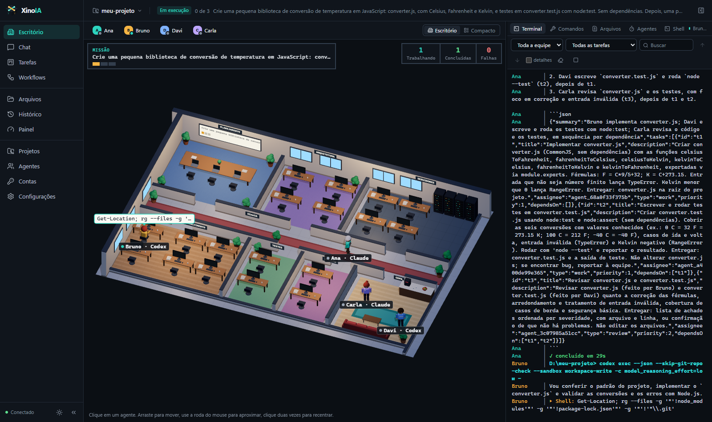
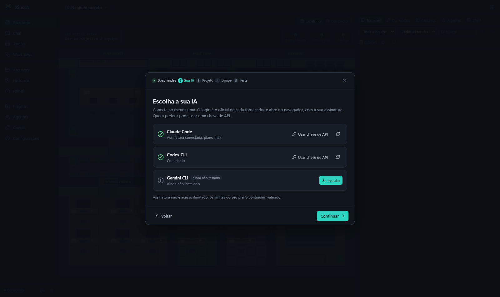
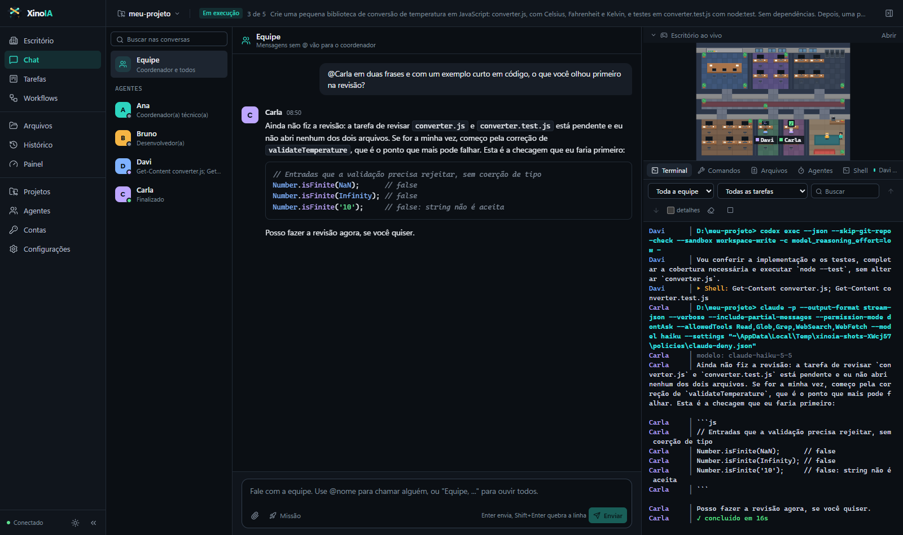
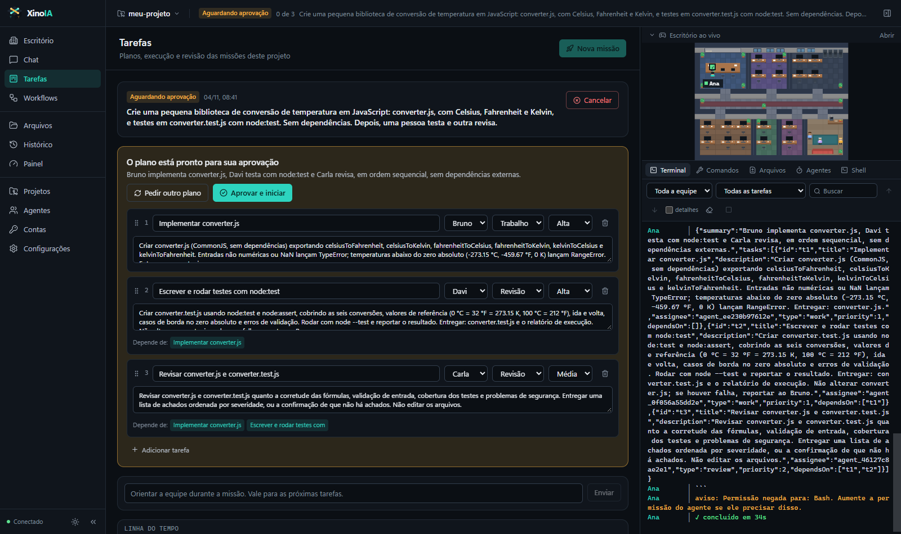
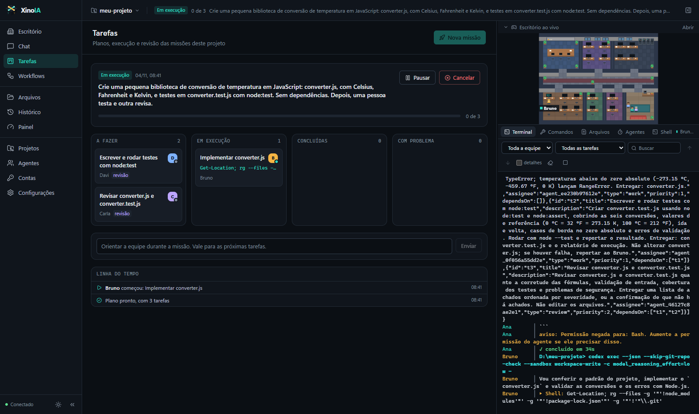
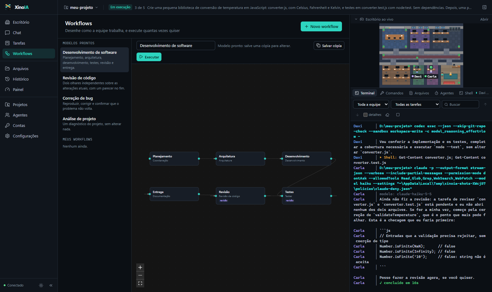
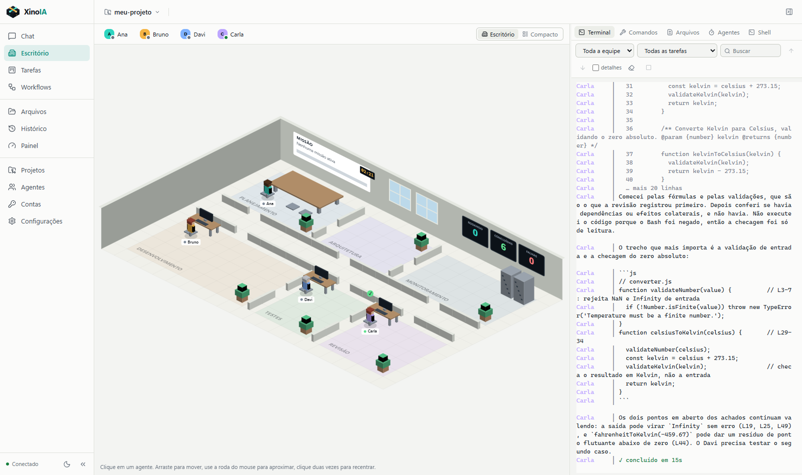
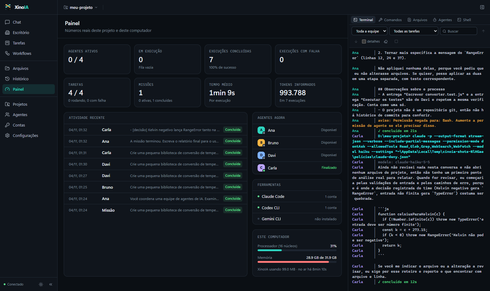

Guia de estudo: como configurar, o que dá para fazer e como trabalhar com uma equipe de agentes de IA
O XinoIA coloca ferramentas de IA para programar, como o Claude Code e o Codex CLI, para trabalhar como uma equipe no seu computador. Você passa um objetivo. Um coordenador planeja, cada agente faz uma tarefa e entrega o resultado para o próximo, e outro agente revisa.
Ele não é uma IA e não inclui nenhuma: ele conduz as ferramentas oficiais que você instala, com as suas contas. Não existe servidor do XinoIA, cadastro nem telemetria.

| Termo | O que é |
|---|---|
| Ferramenta | O CLI oficial de um fornecedor, como Claude Code ou Codex CLI. |
| Conta (perfil) | Um login ou uma chave de API de uma ferramenta. Cada perfil separado tem pasta própria. |
| Projeto | A pasta em que os agentes trabalham. |
| Agente | Um membro da equipe: combina função, ferramenta, conta, modelo e permissão. |
| Execução | Uma rodada de trabalho de um agente, com tudo o que ele fez registrado. |
| Missão | Um objetivo dividido em tarefas, com dependências, revisões e relatório final. |
| Workflow | Um processo desenhado por você, que pode ser executado quantas vezes quiser. |
| Integração | Skills, plugins e servidores MCP que um agente pode usar. |
Os limites do seu plano continuam valendo. Uma equipe gasta mais do que uma conversa só, porque cada tarefa é um trabalho inteiro.
github.com/HelioASjunior/agents-ia/releases e baixe XinoIA-Setup-vX.X.X.exe.Versão portátil: XinoIA-Portable-vX.X.X.exe roda sem instalar e guarda os dados em XinoIA-dados, ao lado dela. Ela não se atualiza sozinha.
Em Configurações > Atualizações, o XinoIA verifica ao abrir e a cada 4 horas, se a verificação automática estiver ligada. Nada é instalado sem você pedir. Antes de instalar, ele confere a assinatura do pacote e faz uma cópia dos dados.
| Com trabalho em andamento | O que acontece |
|---|---|
| Instalar quando terminar | Espera o trabalho acabar, inclusive entre as tarefas de uma missão, e só então reinicia. |
| Interromper e reiniciar | Encerra o agente na hora. A missão fica pausada, e ao retomar a tarefa recomeça do início, gastando cota de novo. O que ela já mudou nos arquivos continua lá. Uma missão em planejamento precisa ser criada de novo. |
| Lembrar depois | Não faz nada agora. |
Em %APPDATA%\XinoIA, fora da pasta do programa. Atualizar ou desinstalar não apaga nada. Para apagar tudo, remova essa pasta depois de desinstalar. Backups ficam em backups, e os logs, em logs. Em Configurações > Dados, dá para criar uma cópia na hora.
Abra Configurações > Dados e encontre a pasta de dados. Depois, em Atualizações, clique em Verificar atualizações e veja a versão instalada.

A escolha da IA no assistente, como uma pessoa nova vê.
O botão Instalar roda o instalador oficial à sua vista. O do Claude Code não precisa de Node.js. Os do Codex CLI e do Gemini CLI precisam. Instalou por fora? Clique em Verificar tudo em Contas.
Clique em Entrar pelo navegador. A página oficial abre, e você entra como sempre, inclusive com o Google, se a sua conta usar. A janela fecha sozinha quando o login termina. Se o navegador não abrir, use Abrir a página de novo. Se a ferramenta perguntar algo, ou o navegador mostrar um código, clique em Ver terminal.
É para quem prefere pagar por uso: cada uso é cobrado pelo fornecedor, à parte da assinatura. A chave fica em um perfil próprio, cifrada pelo Windows e presa ao seu usuário, e não volta para a tela. Por enquanto, isso só funciona no Windows. Uma cópia de segurança restaurada em outro computador não consegue ler a chave.
Em Contas, use Adicionar conta e Entrar em outra conta pelo navegador. Confira no navegador se a conta certa está aberta antes de confirmar: se ele já estiver logado na primeira, os dois perfis podem acabar na mesma conta.
Respeite os termos de cada fornecedor. O XinoIA nunca troca de conta sozinho para contornar um limite: cada agente fica fixo na conta dele. A única troca automática opcional é passar a tarefa a um agente de outro provedor.
| Ferramenta | Assinatura | Chave de API | Situação |
|---|---|---|---|
| Claude Code | Sim | Sim | Testado com conta real |
| Codex CLI | Sim | Sim | Testado com conta real |
| Gemini CLI | Login Google | Sim | Ainda não testado |
| Outras (Contas > Outras ferramentas) | Depende da ferramenta | Precisa ler o pedido pela entrada padrão | |
Em Projetos, adicione uma Pasta existente, uma Pasta nova, ou use Clonar do Git. Os agentes trabalham nessa pasta, e na branch que estiver aberta nela.
O seletor no topo da tela indica em qual projeto você está. Olhe para ele antes de começar uma missão. Em projetos reais, use Git e faça um commit antes: é o que permite desfazer qualquer coisa.
No ícone Memória do projeto, registre notas e decisões curtas. Tudo o que está ali é passado aos agentes neste projeto, e decisões marcadas por eles também entram. Use para o que vale sempre, como "todo texto da interface é em português".
Cada ferramenta lê o próprio arquivo na pasta do projeto: o Claude Code lê CLAUDE.md, e o Codex lê AGENTS.md. Se você só tiver um deles, crie o outro apontando para o primeiro, ou parte da equipe não verá as regras.
Crie um projeto com Pasta nova, abra a Memória do projeto e registre uma decisão. Depois pergunte a um agente qual é essa regra.
Em Agentes, cada um tem nome, cor, função, ferramenta, conta, modelo, esforço, permissão, instruções extras e integrações.
| Nível | O que pode | Na prática |
|---|---|---|
| Somente leitura | Lê o projeto. Não altera arquivos, não roda comandos e não usa ferramentas MCP. | Ideal para coordenar e revisar. Não consegue rodar git status nem git diff: entregue essas informações na descrição da tarefa. |
| Editar | Altera arquivos do projeto. No Codex, roda comandos na área protegida. No Claude, comandos de terminal continuam bloqueados. | Para rodar testes, use o Codex. A área protegida não grava fora da pasta do projeto. |
| Total | Roda qualquer comando, com o acesso da sua conta no computador. | Só vale no modo Autônomo controlado. Use só no agente que precisa, com Git limpo antes. |
Programas que gravam fora da pasta do projeto falham em "editar". Em um projeto real, o build do Unreal parou ao tentar gravar em %LOCALAPPDATA%\UnrealBuildTool. A área protegida também pode negar comandos como tasklist. A saída é "total", e essa decisão é sua.
| Agente | Função | Ferramenta | Permissão |
|---|---|---|---|
| Coordenação | Coordenação | Claude Code | Somente leitura |
| Implementação | Desenvolvimento | Codex | Editar |
| Testes | Testes | Codex | Editar |
| Revisão | Revisão de código | Claude Code | Somente leitura |
Quem revisa em outra ferramenta traz um segundo olhar: um erro que uma IA não vê, a outra pode ver.

| Como escrever | Quem responde |
|---|---|
| Sem menção, no canal Equipe | O coordenador. |
@nome | Esse agente. |
Começando com Equipe, ... | Todos analisam em modo leitura, e o coordenador decide por último. Consome mais do seu limite. |
| No canal de um agente | Conversa direta, que continua de onde parou, inclusive depois de reiniciar. |
Dá para anexar arquivos, buscar nas conversas e ligar Missão no chat da equipe, para o pedido virar uma missão. Com uma missão pausada, o que você escreve entra na linha do tempo dela como orientação.
Pergunte @Revisão o que você olharia primeiro neste projeto? e veja a execução aparecer no terminal ao lado.
Uma missão transforma um objetivo em tarefas. Ela é o coração do XinoIA.
Em Tarefas > Nova missão, escreva o Objetivo, marque a equipe e escolha:

Edite título, descrição, responsável, tipo e prioridade. Use Pedir outro plano dizendo o que mudar, ou Aprovar e iniciar.

| Ação | Para quê |
|---|---|
| Pausar | Para de iniciar tarefas. O que já está rodando termina normalmente. |
| Retomar | Continua a missão pausada. No modo supervisionado, libera a próxima tarefa. |
| Tentar de novo | Na tarefa: refaz uma que falhou, ou uma revisão reprovada no limite de correções. |
| Pular | Na tarefa: segue sem ela. A decisão é sua, e as seguintes passam a poder rodar. |
| Reatribuir | Passa uma tarefa ainda não concluída a outro agente. |
| Orientar a equipe | Sua mensagem vale para as próximas tarefas. |
| Cancelar | Encerra a missão e as execuções em andamento. |
A revisão termina com um veredito: aprovado ou reprovado. Reprovada, o XinoIA cria sozinho uma tarefa de correção e uma nova revisão, e o que vinha depois passa a depender dela. Ao atingir o limite de rodadas, a missão pausa.
Uma revisão reprovada no limite segura o que vem depois: Retomar faz a missão parar de novo, com a explicação. Abra a tarefa e escolha Tentar de novo ou Pular. Uma revisão sem veredito claro conta como falha, nunca como aprovada.
Em paralelo, sua pasta só muda quando você escolhe Integrar no fim, ou Descartar. Se duas tarefas mexerem no mesmo ponto, uma tarefa nova resolve o conflito. Um worktree começa sem node_modules, então o agente precisa instalar as dependências para rodar testes nele. Integrar pede que não haja alterações suas sem commit, para nada do que é seu ser sobrescrito.
No fim, o coordenador escreve um relatório com o que foi feito, as decisões e as pendências.
Em uma pasta de teste, peça: "Crie uma função que converte Celsius em Fahrenheit, com testes". Aprove o plano e acompanhe a passagem de trabalho no escritório.

Um workflow é um processo que você desenha uma vez e usa quantas vezes quiser. Os modelos prontos são Desenvolvimento de software, Revisão de código, Correção de bug e Análise de projeto. Para alterar um modelo, use Salvar cópia.
| Em cada etapa | Significado |
|---|---|
| Título e O que fazer | O pedido. Seja específico, e diga como saber que terminou. |
| Função | Quem executa é o primeiro agente da equipe com esta função. |
| Agente específico | Fixa um agente, em vez de escolher pela função. |
| Tipo | Trabalho, ou Revisão, que aprova ou reprova. |
| Condição | Sempre, Só se a revisão aprovar ou Só se a revisão reprovar. |
| Tentativas em caso de falha | Quantas vezes tentar antes de parar. |
Ligue as etapas arrastando entre elas. Uma etapa só começa depois das que estão ligadas a ela.
Quem revisa em somente leitura não roda comandos. Faça uma etapa anterior reunir o resultado de git diff e dos testes, para o revisor ter o que avaliar.
Em Fila, dê uma lista de objetivos a um workflow. Cada objetivo vira uma missão, e o próximo começa quando ela termina.
| Opção | O que faz |
|---|---|
| Se um objetivo falhar | Parar e esperar por mim deixa a missão pausada para você resolver. Registrar e seguir cancela a missão, anota o motivo e passa para o próximo. |
| Limite de gasto | Soma de tokens, conferida entre um objetivo e outro. Se alguma execução não informar consumo, a fila para. |
Com alterações sem commit, a fila não começa o objetivo e cita os arquivos: termine o workflow com uma etapa de commit, ou faça você e clique em Continuar. Fora do modo autônomo controlado, cada objetivo espera a aprovação do plano. Limite de uso e login nunca são pulados.
Em Configurações. Em execução automática, as ferramentas não conseguem parar no meio para perguntar, então a proteção vem de limites definidos antes.
| Modo | Plano | Tarefas | Permissão total | Comando destrutivo |
|---|---|---|---|---|
| Supervisionado | Você aprova | Você libera cada uma | Limitada a editar | Interrompe e pede decisão |
| Semiautônomo (padrão) | Você aprova | Seguem sozinhas | Limitada a editar | Interrompe e pede decisão |
| Autônomo controlado | Pode ser automático | Seguem sozinhas | Permitida | Só registra um aviso |
Também em Configurações ficam dois limites: Agente travado depois de (minutos sem saída) e Tempo máximo de uma execução.
Ela procura padrões como apagar pastas inteiras ou descartar alterações do Git, mas não vê tudo. O isolamento por worktree separa o trabalho no Git e não é uma caixa de areia do sistema: um agente em "total" alcança o resto do computador.

Tudo o que aparece vem de eventos reais: quem recebe trabalho vai a pé até a mesa e começa a digitar, o monitor acende, o balão mostra o comando real, e quem entrega uma tarefa leva o documento até o colega. Quem está disponível fica na copa.
A cena usa WebGL, com no máximo 30 quadros por segundo. Ao lado de um programa pesado em 3D, escolha Compacto e recolha a telinha: a cena deixa de ser desenhada, e as mesmas informações aparecem em uma tabela. O consumo real de placa de vídeo ainda não foi medido.
| Aba | O que mostra |
|---|---|
| Terminal | A saída real de cada ferramenta, da equipe ou de um agente, com busca. |
| Comandos | Os comandos executados, e quais falharam. |
| Arquivos | Os arquivos alterados, e por quem. |
| Agentes | Estado de cada um, e os tokens informados pelas ferramentas. |
| Shell | Um terminal de verdade na pasta do projeto, para os seus comandos. |

Em Contas > Integrações, adicione skills, plugins e servidores MCP. Depois, ligue a integração em cada agente que for usá-la. O XinoIA mostra o que encontrou neste computador. Configurações com segredos não são copiadas, e continuam disponíveis para o login do computador.
ModelContextProtocol.StartServer no console.http://127.0.0.1:8000/mcp.| Regra | Por quê |
|---|---|
| Tarefas ao mesmo tempo: 1 | O MCP age no editor aberto, que fica na pasta original, não no worktree. Mapas e assets são binários, e um conflito entre eles não tem como ser juntado por um agente. |
| Um agente por vez no editor | A integração já funciona assim. Mais agentes não deixam esse trabalho mais rápido. |
| Compilar pede "total" | O build grava em %LOCALAPPDATA%, fora da área protegida do "editar". |
| Veja se o editor precisa estar fechado | Alguns builds e testes não rodam com ele aberto. Nesse caso, deixe a integração desligada nessas tarefas. |
| Salve antes de trocar de sessão | Salve os mapas no editor e confira com git status. |
O carregamento do plugin e a configuração têm testes, mas as chamadas de ferramenta com o editor aberto ainda não foram testadas pelo XinoIA. Comece por uma alteração pequena e fácil de desfazer.
O XinoIA mostra uso e limites apenas quando a ferramenta informa, e nunca inventa números. Veja em Contas (janelas de limite, quando o CLI informa) e em tokens informados, no Painel e no terminal.
O consumo varia muito. Em um projeto real, cada tarefa do Codex gastou de 30 mil a quase 600 mil tokens de entrada: a maior parte é o agente lendo o projeto para ter contexto.
Equipe, ... só quando precisar ouvir todos.A tarefa para com uma mensagem clara. Espere renovar, troque a conta do agente ou reatribua a tarefa. Com a opção ligada, ela pode passar a um agente de outro provedor.
Os arquivos ficam onde estão, e o login é o mesmo do computador. As conversas não passam: o XinoIA abre sessões novas, então tudo o que importa precisa estar escrito em um arquivo.
XINOIA_HANDOFF.md na raiz: objetivo, estado atual, o que está em andamento, próximos passos, decisões, como compilar e testar, ambiente e armadilhas. Nunca inclua senhas nem chaves.AGENTS.md, não CLAUDE.md.@Coordenação leia o XINOIA_HANDOFF.md e me diga, em cinco linhas, o estado do projeto e o próximo passo. Não altere nenhum arquivo.
Depois, crie uma missão pequena, com Tarefas ao mesmo tempo em 1:
Leia o XINOIA_HANDOFF.md e continue pelo primeiro item de "Próximos passos". Faça só esse item, comprove que funciona como o arquivo indica, e atualize o XINOIA_HANDOFF.md com o que mudou.
Outra IA pode preparar isso seguindo docs/GUIA_PARA_IAS.md, no repositório. O app instalado não pode ser controlado por outra IA, por segurança: os cliques são seus. Em npm run verify, ela confere o sistema sem usar contas nem cota.
127.0.0.1, e exige um token novo a cada abertura.| O quê | Para onde | Quando |
|---|---|---|
| Pedidos e arquivos lidos pelo agente | O fornecedor da ferramenta escolhida | Quando um agente trabalha |
| Verificação de atualizações | GitHub | Ao abrir e a cada 4 horas. Pode ser desligada |
| Instalador e login | Sites oficiais dos fornecedores | Só quando você clica |
Use Git e faça um commit antes de uma missão. Comece com permissões baixas. Revise antes de integrar.
| Mensagem ou sintoma | O que fazer |
|---|---|
| "A conta precisa de login" | Em Contas, Entrar pelo navegador. O login oficial pode expirar. |
| "O provedor recusou a chave de API" | Chave revogada, errada ou sem crédito. Use Trocar chave. |
| "Limite de uso da conta" | Espere renovar, troque a conta do agente ou reatribua a tarefa. |
| "Permissão negada para: Bash" | O agente tentou um comando sem permissão. Reveja o capítulo 5. |
| Comando rejeitado com "blocked by policy" no Codex | Ocorria em perfil separado na versão 0.1.0. Atualize. Em um perfil novo, o primeiro comando pode demorar. |
Build falha com acesso negado em AppData | A área protegida não grava fora do projeto. Veja "Quando editar não basta", no capítulo 5. |
| "A ferramenta não está instalada", mas está | Feche e abra o XinoIA, ou reinicie o Windows, para o PATH atualizar. |
| Integrar diz que há alterações sem commit | Faça commit ou guarde suas alterações. Isso protege o que é seu. |
| O agente diz que não consegue rodar testes | Use um agente com permissão para isso. Em worktrees, ele também precisa instalar as dependências. |
| Retomar faz a missão parar de novo | Há uma revisão reprovada. Abra a tarefa: Tentar de novo ou Pular. |
| O MCP do Unreal aparece "Sem resposta" | Abra o editor, inicie o servidor e confira o endereço. |
| Escritório não abre em 3D | O computador não oferece WebGL. Use a visão Compacto. |
| "O banco é de uma versão mais nova" | Você abriu dados de uma versão mais nova em uma antiga. Instale a mais recente. |
| Banco danificado | O XinoIA guarda o arquivo ao lado, restaura a cópia mais recente e avisa em Configurações > Dados. |
git init, git add -A, git commit -m inicio --allow-empty.